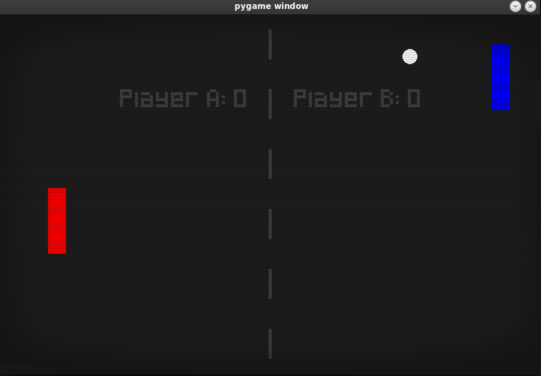

A classic Pong game featuring a player vs. AI opponent.
The game includes basic game mechanics like paddle movement, ball physics,
and scoring, with an AI-controlled enemy offering a challenging experience.
This project serves as a great introduction to AI implementation,
collision detection, and player controls in 2D games.